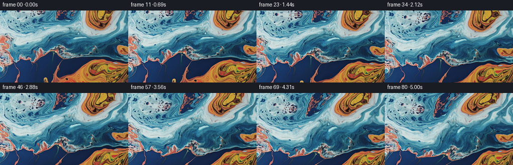
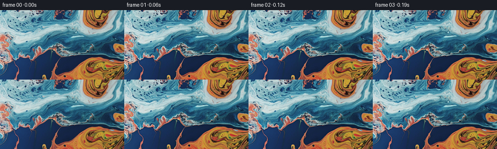
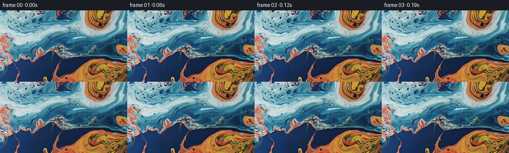
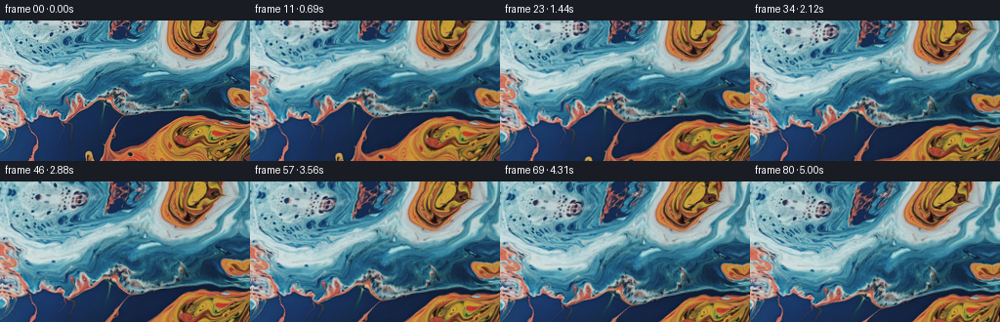
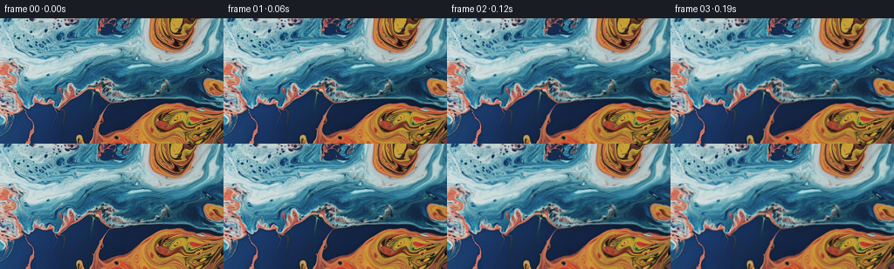

← 本轮 smoke 总览traex/DeepSeek-V4.1-Flash · 0003_s2
vision-agent · 256×144 · 16.0 FPS · 81 帧 · 状态 complete · 输出 tokens 19528
原始任务a close up of a blue and orange liquid, camera tilts up
当前保存结果
已保存候选与代码修改
这里按时间展示外部捕获的候选，每份均可单独播放。保存新版本不等于完成视觉检查；下方工具证据记录实际看过的图。
候选 01 · 2026-11-09T02:12:59.360446+00:00 · 点开播放与检查图
inspection.png

transition_check.png

代码变化
--- 上一保存版本
+++ 本次保存版本
@@ -0,0 +1,142 @@
+from pathlib import Path
+
+import cv2
+import numpy as np
+from PIL import Image
+
+import artifact_io
+
+
+WIDTH = 256
+HEIGHT = 144
+FRAME_COUNT = 81
+FPS = 16.0
+
+
+def smoothstep(value):
+ value = np.clip(value, 0.0, 1.0)
+ return value * value * (3.0 - 2.0 * value)
+
+
+def flow_velocity(x, y, seconds):
+ """A sum of slow vortices in pixel coordinates."""
+ vx = np.zeros_like(x, dtype=np.float32)
+ vy = np.zeros_like(y, dtype=np.float32)
+
+ # center x/y, radius, signed angular speed, phase drift
+ vortices = (
+ (0.10, 0.18, 0.23, 3.8, 0.00),
+ (0.53, 0.55, 0.30, -2.7, 0.17),
+ (0.86, 0.14, 0.21, 4.7, 0.09),
+ (0.82, 0.86, 0.25, -3.6, 0.23),
+ (0.20, 0.82, 0.20, 2.8, 0.12),
+ (0.43, 1.03, 0.22, 2.3, 0.20),
+ )
+ for cx, cy, radius, speed, phase in vortices:
+ drift_x = 0.008 * np.sin(seconds * 0.31 + phase * 7.0)
+ drift_y = 0.005 * np.cos(seconds * 0.27 + phase * 5.0)
+ dx = x / WIDTH - (cx + drift_x)
+ dy = y / HEIGHT - (cy + drift_y)
+ falloff = np.exp(-(dx * dx + dy * dy) / (2.0 * radius * radius))
+ safe_radius = max(radius, 1.0e-4)
+ vx += speed * (-dy / safe_radius) * falloff
+ vy += speed * (dx / safe_radius) * falloff
+
+ # Broad, non-repeating undulations keep the central blue ribbon alive.
+ vx += 0.85 * np.sin(y / 17.5 + seconds * 0.58)
+ vx += 0.55 * np.sin(x / 39.0 - y / 28.0 + seconds * 0.37)
+ vy += 0.70 * np.sin(x / 23.0 - seconds * 0.46)
+ vy += 0.42 * np.sin((x + y) / 41.0 + seconds * 0.29)
+ return vx, vy
+
+
+def make_extended_texture(image):
+ """Reflect a narrow margin so the camera tilt never exposes a seam."""
+ margin = 28
+ return cv2.copyMakeBorder(
+ image,
+ margin,
+ margin,
+ margin,
+ margin,
+ cv2.BORDER_REFLECT_101,
+ )
+
+
+def render_frames(first_frame):
+ source = first_frame.astype(np.float32)
+ extended = make_extended_texture(source)
+ margin = 28
+
+ yy, xx = np.mgrid[0:HEIGHT, 0:WIDTH].astype(np.float32)
+ base_x = xx + margin
+ base_y = yy + margin
+
+ # A soft mask lets flowing pigment pull slightly harder on visible edges.
+ gray = cv2.cvtColor(first_frame, cv2.COLOR_RGB2GRAY).astype(np.float32)
+ grad_x = cv2.Sobel(gray, cv2.CV_32F, 1, 0, ksize=3)
+ grad_y = cv2.Sobel(gray, cv2.CV_32F, 0, 1, ksize=3)
+ edge = cv2.GaussianBlur(cv2.magnitude(grad_x, grad_y), (0, 0), 2.2)
+ edge = np.clip(edge / 110.0, 0.0, 1.0)
+
+ frames = np.empty((FRAME_COUNT, HEIGHT, WIDTH, 3), dtype=np.uint8)
+ frames[0] = first_frame
+
+ for index in range(1, FRAME_COUNT):
+ seconds = index / FPS
+ progress = index / (FRAME_COUNT - 1)
+
+ vx, vy = flow_velocity(xx, yy, seconds)
+ # Displacement is integrated as a slow, smooth flow rather than jitter.
+ fluid_x = vx * seconds
+ fluid_y = vy * seconds
+
+ phase = seconds * 1.75
+ micro_x = 0.62 * edge * np.sin(yy / 3.8 + phase + xx / 29.0)
+ micro_y = 0.54 * edge * np.cos(xx / 4.4 - phase + yy / 31.0)
+
+ # Camera pitches upward: the pictured liquid travels down in frame.
+ camera_progress = smoothstep(progress * 1.06)
+ camera_y = 18.5 * camera_progress
+ camera_x = 0.8 * np.sin(progress * np.pi)
+
+ map_x = (base_x - fluid_x - micro_x + camera_x).astype(np.float32)
+ map_y = (base_y - fluid_y - micro_y - camera_y).astype(np.float32)
+
+ warped = cv2.remap(
+ extended,
+ map_x,
+ map_y,
+ interpolation=cv2.INTER_CUBIC,
+ borderMode=cv2.BORDER_REFLECT_101,
+ )
+
+ # Small, moving specular accents suggest a wet, illuminated surface.
+ low = cv2.GaussianBlur(warped, (0, 0), 3.0)
+ detail = warped - low
+ sheen_x = 0.5 + 0.5 * np.sin(xx / 58.0 + yy / 83.0 - seconds * 0.52)
+ sheen_y = 0.5 + 0.5 * np.cos(xx / 71.0 - yy / 47.0 + seconds * 0.39)
+ sheen = (0.55 * sheen_x + 0.45 * sheen_y)[..., None]
+ warped += detail * (0.055 + 0.045 * sheen)
+ warped += (sheen - 0.5) * np.array([1.4, 1.8, 2.0], dtype=np.float32)
+
+ # Keep colors within the source's saturated, slightly muted range.
+ warped = np.clip(warped, 0.0, 255.0)
+ frames[index] = np.rint(warped).astype(np.uint8)
+
+ return frames
+
+
+def main():
+ case_dir = Path(__file__).resolve().parent
+ first_frame = np.asarray(Image.open(case_dir / "first_frame.png").convert("RGB"))
+ assert first_frame.shape == (HEIGHT, WIDTH, 3)
+ frames = render_frames(first_frame)
+ assert frames.shape == (FRAME_COUNT, HEIGHT, WIDTH, 3)
+ assert frames.dtype == np.uint8
+ assert np.array_equal(frames[0], first_frame)
+ artifact_io.save(frames, case_dir)
+
+
+if __name__ == "__main__":
+ main()
候选 02 · 2026-11-09T02:13:04.591625+00:00 · 点开播放与检查图
inspection.png

transition_check.png

代码变化
代码未变化；重新保存了产物。
候选 03 · 2026-11-09T02:14:45.328140+00:00 · 点开播放与检查图
inspection.png
transition_check.png

代码变化
--- 上一保存版本
+++ 本次保存版本
@@ -88,12 +88,12 @@
vx, vy = flow_velocity(xx, yy, seconds)
# Displacement is integrated as a slow, smooth flow rather than jitter.
- fluid_x = vx * seconds
- fluid_y = vy * seconds
+ fluid_x = 0.68 * vx * seconds
+ fluid_y = 0.68 * vy * seconds
phase = seconds * 1.75
- micro_x = 0.62 * edge * np.sin(yy / 3.8 + phase + xx / 29.0)
- micro_y = 0.54 * edge * np.cos(xx / 4.4 - phase + yy / 31.0)
+ micro_x = 0.44 * edge * np.sin(yy / 3.8 + phase + xx / 29.0)
+ micro_y = 0.38 * edge * np.cos(xx / 4.4 - phase + yy / 31.0)
# Camera pitches upward: the pictured liquid travels down in frame.
camera_progress = smoothstep(progress * 1.06)
候选 04 · 2026-11-09T02:15:47.476834+00:00 · 点开播放与检查图
inspection.png

transition_check.png

代码变化
--- 上一保存版本
+++ 本次保存版本
@@ -1,8 +1,7 @@
from pathlib import Path
-import cv2
import numpy as np
-from PIL import Image
+from PIL import Image, ImageFilter
import artifact_io
@@ -53,13 +52,32 @@
def make_extended_texture(image):
"""Reflect a narrow margin so the camera tilt never exposes a seam."""
margin = 28
- return cv2.copyMakeBorder(
- image,
- margin,
- margin,
- margin,
- margin,
- cv2.BORDER_REFLECT_101,
+ return np.pad(image, ((margin, margin), (margin, margin), (0, 0)), mode="reflect")
+
+
+def bilinear_sample(image, x, y):
+ """Sample an RGB image at floating-point coordinates."""
+ height, width = image.shape[:2]
+ x0 = np.floor(x).astype(np.int32)
+ y0 = np.floor(y).astype(np.int32)
+ x1 = np.clip(x0 + 1, 0, width - 1)
+ y1 = np.clip(y0 + 1, 0, height - 1)
+ x0 = np.clip(x0, 0, width - 1)
+ y0 = np.clip(y0, 0, height - 1)
+
+ fx = (x - x0)[..., None]
+ fy = (y - y0)[..., None]
+ top = image[y0, x0] * (1.0 - fx) + image[y0, x1] * fx
+ bottom = image[y1, x0] * (1.0 - fx) + image[y1, x1] * fx
+ return top * (1.0 - fy) + bottom * fy
+
+
+def gaussian_blur(image, radius):
+ return np.asarray(
+ Image.fromarray(image.astype(np.uint8)).filter(
+ ImageFilter.GaussianBlur(radius)
+ ),
+ dtype=np.float32,
)
@@ -73,10 +91,9 @@
base_y = yy + margin
# A soft mask lets flowing pigment pull slightly harder on visible edges.
- gray = cv2.cvtColor(first_frame, cv2.COLOR_RGB2GRAY).astype(np.float32)
- grad_x = cv2.Sobel(gray, cv2.CV_32F, 1, 0, ksize=3)
- grad_y = cv2.Sobel(gray, cv2.CV_32F, 0, 1, ksize=3)
- edge = cv2.GaussianBlur(cv2.magnitude(grad_x, grad_y), (0, 0), 2.2)
+ gray = np.dot(first_frame.astype(np.float32), [0.299, 0.587, 0.114])
+ grad_y, grad_x = np.gradient(gray)
+ edge = gaussian_blur(np.hypot(grad_x, grad_y), 2.2)
edge = np.clip(edge / 110.0, 0.0, 1.0)
frames = np.empty((FRAME_COUNT, HEIGHT, WIDTH, 3), dtype=np.uint8)
@@ -103,16 +120,10 @@
map_x = (base_x - fluid_x - micro_x + camera_x).astype(np.float32)
map_y = (base_y - fluid_y - micro_y - camera_y).astype(np.float32)
- warped = cv2.remap(
- extended,
- map_x,
- map_y,
- interpolation=cv2.INTER_CUBIC,
- borderMode=cv2.BORDER_REFLECT_101,
- )
+ warped = bilinear_sample(extended, map_x, map_y)
# Small, moving specular accents suggest a wet, illuminated surface.
- low = cv2.GaussianBlur(warped, (0, 0), 3.0)
+ low = gaussian_blur(warped, 3.0)
detail = warped - low
sheen_x = 0.5 + 0.5 * np.sin(xx / 58.0 + yy / 83.0 - seconds * 0.52)
sheen_y = 0.5 + 0.5 * np.cos(xx / 71.0 - yy / 47.0 + seconds * 0.39)
候选 05 · 2026-11-09T02:15:52.980259+00:00 · 点开播放与检查图
inspection.png

transition_check.png

代码变化
代码未变化；重新保存了产物。
可观测工具行为
命令 1 · 2026-11-09T02:10:48.650626+00:00/bin/bash -c "pwd && rg --files -g 'prompt.txt' -g 'GENERATION_RULES.md' -g 'first_frame.png' -g '"'!*.pyc'"'"
exit 0 命令 2 · 2026-11-09T02:10:48.775607+00:00/bin/bash -c "sed -n '1,240p' GENERATION_RULES.md"
exit 0 命令 3 · 2026-11-09T02:10:49.067856+00:00/bin/bash -c "sed -n '1,240p' prompt.txt"
exit 0 命令 4 · 2026-11-09T02:10:49.265963+00:00/bin/bash -c 'file first_frame.png && identify first_frame.png 2>/dev/null || true && ls -la'
exit 0 命令 5 · 2026-11-09T02:11:03.065374+00:00/bin/bash -c "sed -n '1,260p' artifact_io.py"
exit 0 命令 6 · 2026-11-09T02:11:03.278638+00:00/bin/bash -c 'cat task_spec.json'
exit 0 命令 7 · 2026-11-09T02:11:03.694633+00:00/bin/bash -c "python - <<'PY'
from PIL import Image
import numpy as np
im=Image.open('first_frame.png')
print(im.mode, im.size)
a=np.array(im)
print(a.shape, a.dtype, a.min(), a.max())
for y,x in [(0,0),(0,128),(0,255),(143,0),(143,128),(143,255),(72,128)]: print((y,x),a[y,x])
PY"exit 0 命令 8 · 2026-11-09T02:11:40.518665+00:00/bin/bash -c "python - <<'PY'
mods=['numpy','PIL','scipy','cv2','imageio','matplotlib']
for m in mods:
try:
x=__import__(m); print(m,'ok',getattr(x,'__version__',''))
except Exception as e: print(m,'NO',e)
PY"
exit 0 命令 9 · 2026-11-09T02:11:40.744811+00:00/bin/bash -c "python - <<'PY'
from PIL import Image
import numpy as np
im=np.asarray(Image.open('first_frame.png')).astype(float)
# basic structure/energy per row/column
print('mean rgb',im.mean((0,1)))
print('row means',[(i,round(im[i].mean(),1)) for i in range(0,144,16)])
print('col means',[(i,round(im[:,i].mean(),1)) for i in range(0,256,32)])
# palette clusters quick
q=(im//16*16).reshape(-1,3)
u,c=np.unique(q,axis=0,return_counts=True)
ix=np.argsort(c)[-15:][::-1]
print(list(zip(c[ix],u[ix].tolist())))
PY"exit 0 命令 10 · 2026-11-09T02:12:28.003190+00:00/bin/bash -c 'python generate.py'
exit 1 命令 11 · 2026-11-09T02:12:55.779927+00:00/bin/bash -c 'python generate.py'
exit 0 命令 12 · 2026-11-09T02:13:26.722790+00:00/bin/bash -c "python - <<'PY'
import numpy as np
from PIL import Image
from pathlib import Path
p=Path('frames'); fs=sorted(p.glob('*.png'))
a=np.stack([np.asarray(Image.open(f)) for f in fs])
print('shape',a.shape)
d=np.abs(a[1:].astype(np.int16)-a[:-1].astype(np.int16))
print('consecutive MAE min/median/max', d.mean((1,2,3)).min(),np.median(d.mean((1,2,3))),d.mean((1,2,3)).max())
print('changed pixels median/max',np.median((d.max(3)>2).sum((1,2))), (d.max(3)>2).sum((1,2)).max())
print('first exact',np.array_equal(a[0],np.asarray(Image.open('first_frame.png'))))
for i in [0,10,20,30,40,50,60,70,80]: print(i,round(a[i].mean(),2),a[i].min(),a[i].max())
PY"exit 0 命令 13 · 2026-11-09T02:13:54.976355+00:00/bin/bash -c "python - <<'PY'
import cv2, numpy as np
from PIL import Image
im=np.asarray(Image.open('first_frame.png')).astype(np.float32)
g=cv2.cvtColor(im.astype(np.uint8),cv2.COLOR_RGB2GRAY).astype(np.float32)
gx=cv2.Sobel(g,cv2.CV_32F,1,0,ksize=3); gy=cv2.Sobel(g,cv2.CV_32F,0,1,ksize=3)
e=cv2.GaussianBlur(cv2.magnitude(gx,gy),(0,0),2.2)
for p in [50,75,90,95,97,99,99.5,99.9]: print(p,np.percentile(e,p))
PY"exit 0 命令 14 · 2026-11-09T02:14:09.688425+00:00/bin/bash -c "python - <<'PY'
import generate, numpy as np
for s in [0.0625,1,2.5,5.0]:
yy,xx=np.mgrid[0:144,0:256].astype(np.float32)
vx,vy=generate.flow_velocity(xx,yy,s)
print(s,'vx',np.percentile(vx,[5,50,95]),'vy',np.percentile(vy,[5,50,95]),'disp',np.percentile(np.hypot(vx*s,vy*s),[5,50,95]))
PY"
exit 0 命令 15 · 2026-11-09T02:14:38.981315+00:00/bin/bash -c "python generate.py && python - <<'PY'
import numpy as np
from PIL import Image
from pathlib import Path
a=np.stack([np.asarray(Image.open(f)) for f in sorted(Path('frames').glob('*.png'))])
d=np.abs(a[1:].astype(np.int16)-a[:-1].astype(np.int16))
print('shape',a.shape,'dtype',a.dtype)
print('consecutive MAE min/median/max',*[round(float(x),3) for x in (d.mean((1,2,3)).min(),np.median(d.mean((1,2,3))),d.mean((1,2,3)).max())])
print('first exact',np.array_equal(a[0],np.asarray(Image.open('first_frame.png'))))
PY"exit 0 命令 16 · 2026-11-09T02:15:11.118461+00:00/bin/bash -c "du -sh frames pixels.npz index.html inspection.png transition_check.png && find . -maxdepth 1 -type d -name 'matplotlib-*' -print"
exit 0 命令 17 · 2026-11-09T02:15:11.683536+00:00/bin/bash -c 'git status --short 2>/dev/null || true'
exit 0 命令 18 · 2026-11-09T02:15:11.874839+00:00/bin/bash -c "python - <<'PY'
import json
from pathlib import Path
import numpy as np
from PIL import Image
case=Path('.')
spec=json.loads((case/'task_spec.json').read_text())
data=np.load(case/'pixels.npz')['pixels']
frames=np.stack([np.asarray(Image.open(case/'frames'/f'{i:02d}.png')) for i in range(spec['frames'])])
first=np.asarray(Image.open(case/'first_frame.png').convert('RGB'))
assert data.shape == (spec['height'],spec['width'],spec['frames'])
assert data.dtype == np.uint32
assert frames.shape == (spec['frames'],spec['height'],spec['width'],3)
assert frames.dtype == np.uint8
assert np.array_equal(frames[0], first)
assert np.array_equal(data[:,:,0], (frames[0,:,:,0].astype(np.uint32)<<16)|(frames[0,:,:,1].astype(np.uint32)<<8)|frames[0,:,:,2])
assert (case/'index.html').is_file() and (case/'index.html').stat().st_size > 100000
print('validated', frames.shape, frames.dtype, 'fps', spec['fps'], 'duration', spec['frames']/spec['fps'])
print('first-frame exact: yes')
print('pixel tensor:', data.shape, data.dtype)
print('index.html bytes:', (case/'index.html').stat().st_size)
PY"exit 0 命令 19 · 2026-11-09T02:15:45.695998+00:00/bin/bash -c 'python generate.py'
exit 0 命令 20 · 2026-11-09T02:16:00.458735+00:00/bin/bash -c "python -m py_compile generate.py && python - <<'PY'
import hashlib, json
from pathlib import Path
import numpy as np
from PIL import Image
case=Path('.')
spec=json.loads((case/'task_spec.json').read_text())
frames=np.stack([np.asarray(Image.open(case/'frames'/f'{i:02d}.png')) for i in range(spec['frames'])])
tensor=np.load(case/'pixels.npz')['pixels']
first=np.asarray(Image.open(case/'first_frame.png').convert('RGB'))
assert frames.shape == (81,144,256,3) and frames.dtype == np.uint8
assert tensor.shape == (144,256,81) and tensor.dtype == np.uint32
assert np.array_equal(frames[0], first)
d=np.abs(frames[1:].astype(np.int16)-frames[:-1].astype(np.int16))
assert d.mean() > 0.5
print('frames', frames.shape, frames.dtype)
print('first frame identical', np.array_equal(frames[0], first))
print('mean consecutive delta', round(float(d.mean()),3))
print('sha256', hashlib.sha256((case/'pixels.npz').read_bytes()).hexdigest())
PY"exit 0 命令 21 · 2026-11-09T02:16:04.406771+00:00/bin/bash -c "find . -maxdepth 2 -type f | sort | sed -n '1,120p'"
exit 0 视觉工具实际返回图片 1

视觉工具实际返回图片 2

视觉工具实际返回图片 3

视觉工具实际返回图片 4
视觉工具实际返回图片 5

视觉工具实际返回图片 6

保存候选 5 份；完成命令 21 次；可验证图片返回 6 张。原始 API 响应与完整日志保留在本地。